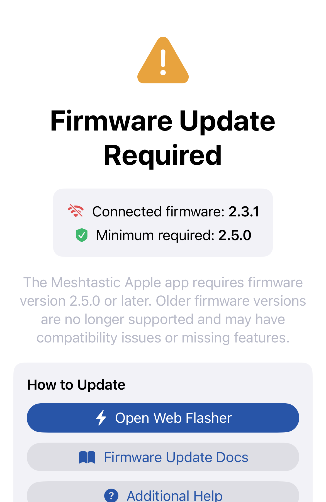
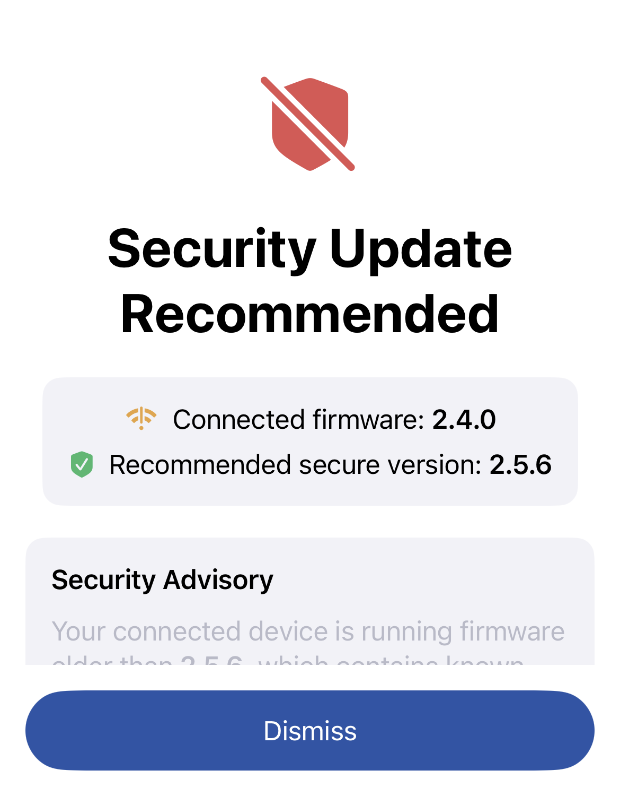

The app can check for and install Meshtastic firmware updates directly on your connected radio over Bluetooth.
When you connect to a node running firmware older than the latest stable release, the app can send a firmware update notification. For hardware the app can update directly, tapping the notification opens Firmware Updates so you can review and start the OTA update. For hardware that needs an external updater, the notification tells you to use Meshtastic Flasher instead.
The app remembers each node, hardware target, and stable version it has already notified you about, so it will not keep sending the same reminder.
| Icon | Progress | Description |
|---|---|---|
| Starting | Update initiating — firmware binary downloading. | |
| In Progress | Firmware transfer in progress over BLE. | |
| Complete | Transfer finished — radio is rebooting. | |
| Error | Update failed — see Troubleshooting below. |
Do not close the app or move out of Bluetooth range during a firmware update.
While a supported OTA transfer is active, tap Play Chirpy Hop to play without leaving the updater. Firmware progress remains visible above the game, and the back button returns to the normal update screen at any time. Keep the Meshtastic app in the foreground until the update finishes.
| Channel | Description |
|---|---|
| Stable | Recommended for most users. Tested releases. |
| Alpha | Early access — may contain bugs. Use on secondary/test devices only. |
Select the update channel in Settings → App Settings → Firmware Channel.
Some radios ship with special event firmware for gatherings like DEF CON, Open Sauce, Hamvention, or Burning Man. When you connect to a device running event firmware, the Connect screen shows an event badge with the event's name and a welcome message, tinted in the event's accent color.
Tap the badge to open the event info sheet, which shows the event's location, dates, useful links, and the event firmware build. From there you can:
New-node notifications are automatically muted while you're connected to event firmware (events are busy — many nodes appear at once) and restored when you return to standard firmware.
After the event: once an event's end date has passed, the Connect screen shows a reminder to return to standard Meshtastic firmware. Tap it to open the firmware update flow. The reminder clears automatically once the device is back on standard firmware.
Event details are fetched from Meshtastic's servers with an offline fallback, so a newly announced event can appear without an app update.
Update fails mid-way


Radio not appearing in firmware list
Version shown as unknown